설명 |
|
제약 사항 |
|
다국어 변환시 참조할 언어 별 JS 파일은 아래의 방법으로 작성하십시오.
(1) 다국어로 표현할 값을 KEY : VALUE 형태의 Array 형식으로 작성하십시오.
(2) 다국어 치환에 사용되는 KEY는 모든 언어가 동일한 값을 사용합니다.
코드 0-1.ko.js (한국어)
WebSquare.WebSquareLang = {
"test": "가나다가나다",
"anchor": "앵커",
"output": "아웃풋",
"span": "스팬",
"textbox": "텍스트박스",
"trigger": "트리거",
"001": "서울",
"002": "부산",
"003": "대구",
"004": "제주",
"chooseOption": "도시를 선택하세요.",
"tooltip": "툴팁용 텍스트입니다."
}코드 0-2.en.js (영어)
WebSquare.WebSquareLang = {
"test": "abcABC",
"anchor": "Anchor",
"output": "Output",
"span": "Span",
"textbox": "TextBox",
"trigger": "Trigger",
"001": "Seoul",
"002": "Busan",
"003": "Daegu",
"004": "Jeju",
"chooseOption": "Select a city.",
"tooltip": "This is tooltip text."
};그림 1.ko.js 및 en.js 예시
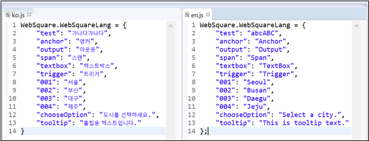
언어 | ISO 코드 | 언어 | ISO 코드 |
|---|---|---|---|
Abkhazian | ab | Kurdish | ku |
Afar | aa | Laothian | lo |
Afrikaans | af | Latin | la |
Albanian | sq | Latvian (Lettish) | lv |
Amharic | am | Limburgish (Limburger) | li |
Arabic | ar | Lingala | ln |
Aragonese | an | Lithuanian | lt |
Armenian | hy | Macedonian | mk |
Assamese | as | Malagasy | mg |
Aymara | ay | Malay | ms |
Azerbaijani | az | Malayalam | ml |
Bashkir | ba | ||
Basque | eu | Maltese | mt |
Bengali (Bangla) | bn | Maori | mi |
Bhutani | dz | Marathi | mr |
Bihari | bh | Moldavian | mo |
Bislama | bi | Mongolian | mn |
Breton | br | Nauru | na |
Bulgarian | bg | Nepali | ne |
Burmese | my | Norwegian | no |
Byelorussian (Belarusian) | be | Occitan | oc |
Cambodian | km | Oriya | or |
Catalan | ca | Oromo (Afan, Galla) | om |
Cherokee | Papiamentu | ||
Chewa | Pashto (Pushto) | ps | |
Chinese (Simplified) | zh | Polish | pl |
Chinese (Traditional) | zh | Portuguese | pt |
Corsican | co | Punjabi | pa |
Croatian | hr | Quechua | qu |
Czech | cs | Rhaeto-Romance | rm |
Danish | da | Romanian | ro |
Divehi | Russian | ru | |
Dutch | nl | Sami (Lappish) | |
Edo | Samoan | sm | |
English | en | Sangro | sg |
Esperanto | eo | Sanskrit | sa |
Estonian | et | Serbian | sr |
Faeroese | fo | Serbo-Croatian | sh |
Farsi | fa | Sesotho | st |
Fiji | fj | Setswana | tn |
Finnish | fi | Shona | sn |
Flemish | Sichuan Yi | ii | |
French | fr | Sindhi | sd |
Frisian | fy | Sinhalese | si |
Fulfulde | Siswati | ss | |
Galician | gl | Slovak | sk |
Gaelic (Scottish) | gd | Slovenian | sl |
Gaelic (Manx) | gv | Somali | so |
Georgian | ka | Spanish | es |
German | de | Sundanese | su |
Greek | el | Swahili (Kiswahili) | sw |
Greenlandic | kl | Swedish | sv |
Guarani | gn | Syriac | |
Gujarati | gu | Tagalog | tl |
Haitian Creole | ht | Tajik | tg |
Hausa | ha | Tamazight | |
Hawaiian | Tamil | ta | |
Hebrew | he, iw | Tatar | tt |
Hindi | hi | Telugu | te |
Hungarian | hu | Thai | th |
Ibibio | Tibetan | bo | |
Icelandic | is | Tigrinya | ti |
Ido | io | Tonga | to |
Igbo | Tsonga | ts | |
Indonesian | id, in | Turkish | tr |
Interlingua | ia | Turkmen | tk |
Interlingue | ie | Twi | tw |
Inuktitut | iu | Uighur | ug |
Inupiak | ik | Ukrainian | uk |
Irish | ga | Urdu | ur |
Italian | it | Uzbek | uz |
Japanese | ja | Venda | |
Javanese | jv | Vietnamese | vi |
Kannada | kn | Volapuk | vo |
Kanuri | Wallon | wa | |
Kashmiri | ks | Welsh | cy |
Kazakh | kk | Wolof | wo |
Kinyarwanda (Ruanda) | rw | Xhosa | xh |
Kirghiz | ky | Yi | |
Kirundi (Rundi) | rn | Yiddish | yi, ji |
Konkani | Yoruba | yo | |
Korean | ko | Zulu | zu |
config.xml 설정 파일에 아래와 같이 언어팩 관련 설정을 추가하십시오.
WebSquare5 Studio를 실행합니다.
프로젝트를 우클릭한 후 Properties를 선택합니다.
좌측에서 WebSquare – Engine Configuration을 선택 후, 아래와 같이 config.xml 파일을 편집합니다.
useLanguagePack="true" 설정을 추가합니다.
lang에 지정한 언어 구분 키 값을 설정합니다.
value에 다국어 변환시 참조할 각 언어의 스크립트 파일ko.js, en.js, ch.js 등)을 Context-Root 기준으로 명시합니다.
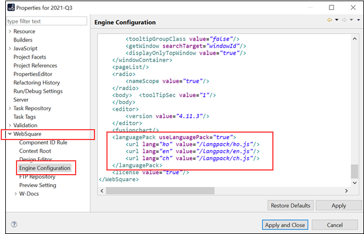
코드 0-3.다국어 설정 예 (config.xml)
<languagePack useLanguagePack="true"> <url lang="ko" value="/langpack/ko.js"/> <url lang="en" value="/langpack/en.js"/> <url lang="ch" value="/langpack/ch.js"/> </languagePack>
localeRef)설명 | 각 컴포넌트에 |
|---|---|
관련 설정 |
|
해당 컴포넌트 |
|
그림 2.ko.js와 en.js 파일에 각 키 별로 표시할 텍스트를 정의한 예
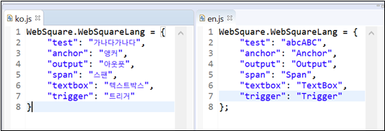
그림 3.useLocale="true" 및 localeRef="언어 팩에 정의한 키" 설정을 통해 다국어를 적용한 모습
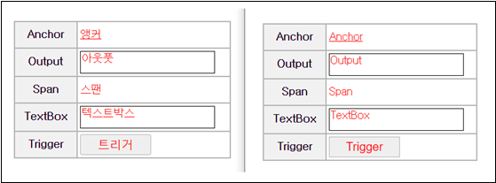
예제 파일
인터넷에서 다운로드 혹은
WEBSQUARE_DEV_PACK의 GUIDE 프로젝트에서 보기
(/_Multi-Language/useLocale_localeRef_Multi_language/)
그림 4.YouTube 동영상 (https://youtu.be/ekYGymLlQCM)
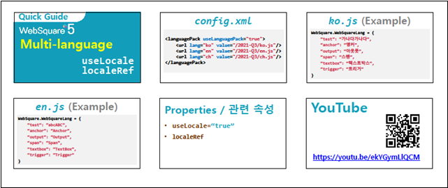
localeRef 속성 값이 언어 파일에 정의되지 않은 경우아래 컴포넌트에 대해 useLocale="true" 설정 및 localeRef 속성 값으로 다국어를 적용할 경우, localeRef가 언어 파일에 없는 경우 "global_undefined" 대신 각 컴포넌트의 label 혹은 value 값을 표시할 수 있습니다.
Anchor
Output
Span
TextBox
Trigger
그림 5.useDefaultLabel="false"
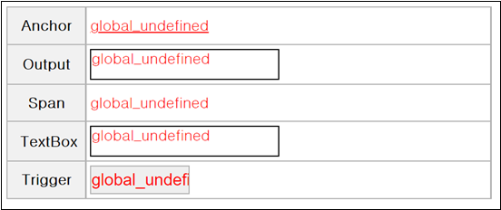
그림 6.useDefaultLabel="true"
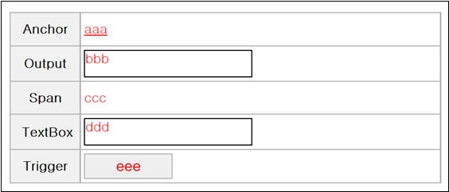
코드 0-4.config.xml 설정 예
<WebSquare>
<useLocale value="true" useDefaultLabel="true"/>
</WebSquare>예제 파일
인터넷에서 다운로드 혹은
WEBSQUARE_DEV_PACK의 GUIDE 프로젝트에서 보기
(/_Multi-language/useLocale_useDefaultLabel_Multi_language/)
그림 7.YouTube 동영상 (https://youtu.be/p3FQLMpBe1g)
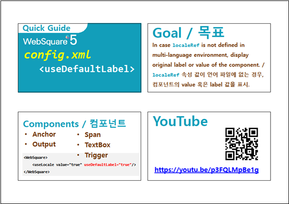
useLocaleItem)설명 | 각 컴포넌트에 |
|---|---|
관련 설정 |
|
해당 컴포넌트 |
|
선택 항목은 각 언어 파일에 정의할 KEY로 설정하십시오.
그림 8.선택 항목 설정 (CheckBox 예시)
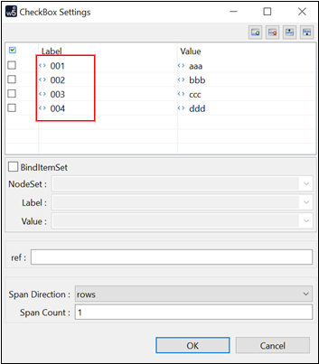
다음은 useLocale 및 useLocaleItem 속성을 설정하지 않았을 때 표시되는 CheckBox의 선택 항목입니다.
그림 9.useLocale="false"
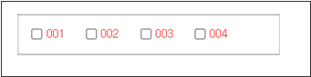
그러나, 아래와 같이 각 언어 파일에 선택 항목 001 ~ 004 KEY에 대한 언어 별 텍스트를 정의하고, useLocale 및 useItemLocale 속성을 설정하면 각 언어에 대한 텍스트가 표시됩니다.
그림 10.en.js 및 ko.js
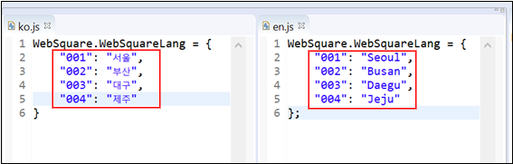
그림 11.useLocale="true" useItemLocale="true"
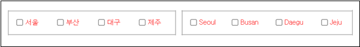
예제 파일
인터넷에서 다운로드 혹은
WEBSQUARE_DEV_PACK의 GUIDE 프로젝트에서 보기
(/_Multi-Language/useLocale_useItemLocale_Multi_language/)
그림 12.YouTube 동영상 (https://youtu.be/CH5iy7atQh0)
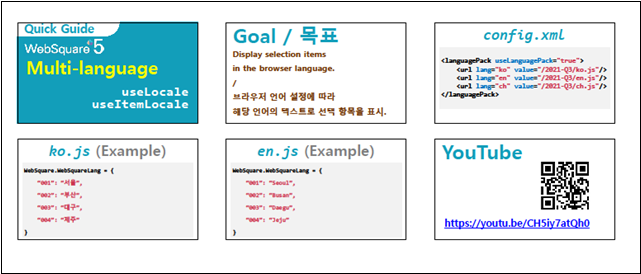
chooseOption 다국어 (useItemLocale & chooseOptionLabelLocaleRef)설명 | 각 컴포넌트에 |
|---|---|
관련 설정 |
|
해당 컴포넌트 |
|
아래와 같이 SelectBox 설정 창에서 chooseOption과 allOption을 선택합니다.
그림 13.chooseOption 및 allOption 설정 (SelectBox 예시)
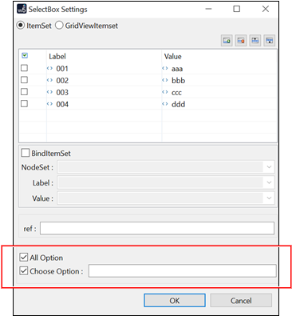
각 언어 파일에는 chooseOPptionLabelLocaleRef로 지정할 KEY에 대한 각 언어 별 텍스트를 정의합니다. 아래 예시의 경우, 한국어 브라우저에서는 "도시를 선택하세요."가 표시되고, 영어 브라우저에서는 "Select a city."가 표시됩니다.
그림 14.ko.js 및 en.js 파일에 chooseOption 텍스트용 KEY를 지정
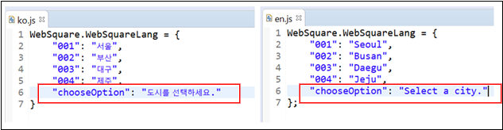
다음은 chooseOption="true" 설정을 추가한 후, chooseOptionLabelLocaleRef 값으로 각 언어 파일에 정의한 "chooseOption" KEY 값을 설정했을 때의 모습입니다. allOption에 대해서는 "-전체-"와 "-all-"이 각각 표시됩니다.
그림 15.chooseOptionLabelLocaleRef="chooseOption" allOption="true"
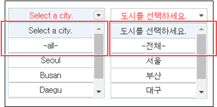
예제 파일
인터넷에서 다운로드 혹은
WEBSQUARE_DEV_PACK의 GUIDE 프로젝트에서 보기
(/_Multi-Language/
useLocale_useItemLocale_chooseOption_chooseOptionLabelLocaleRef_Multi_language/)
그림 16.YouTube 동영상 (https://youtu.be/9jZhEDnSmlw)
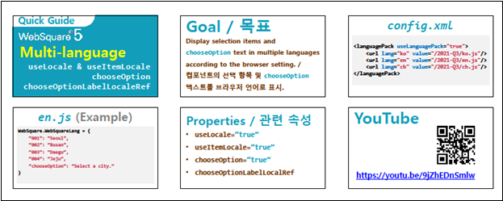
tooltipLocaleRef)설명 |
|
|---|---|
관련 설정 |
|
해당 컴포넌트 |
|
각 언어 파일에는 tooltipLocaleRef로 지정할 KEY에 대한 각 언어 별 텍스트를 정의합니다. 아래 예시의 경우, 한국어 브라우저에서는 "툴팁용 텍스트입니다."가 표시되고, 영어 브라우저에서는 "This is tooltip text."가 표시됩니다.
그림 17.ko.js 및 en.js 파일에 tooltipLocaleRef 텍스트용 KEY를 지정
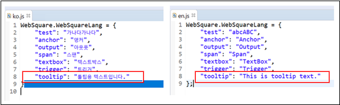
다음은 useLocale="true" 설정을 추가한 후, chooseOptionLabelLocaleRef 값으로 각 언어 파일에 정의한 "tooltip" KEY 값을 설정했을 때의 모습입니다. (tooltipLocaleRef 값이 없는 경우, tooltip 값속성으로 정의한 값을 그대로 사용합니다.)
그림 18.useLocale="true" tooltipLocaleRef="tooltip"
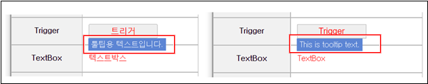
예제 파일
인터넷에서 다운로드 혹은
WEBSQUARE_DEV_PACK의 GUIDE 프로젝트에서 보기
(/_Multi-Language/useLocale_tooltipLocaleRef_Multi_language/)
그림 19.YouTube 동영상 (https://youtu.be/mV2H51EV_iw)
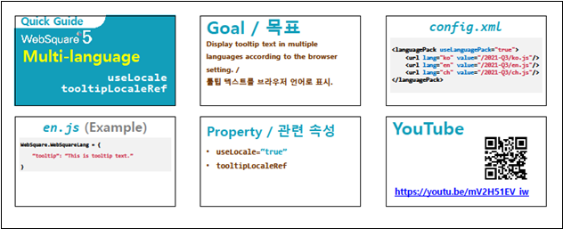
설명 |
|
제약 사항 |
|
최초 다국어 변환을 요청하면 다국어 치환에 사용될 properties를 서버에 로딩합니다. (재로딩은 할 수 없습니다.)
properties를 수정할 경우 아래 방법으로 재 로딩 하십시오.
1. WAS를 다시 기동합니다.
2. LabelMessageLoader의 instance를 받아 reload(); API를 호출합니다.
다국어로 치환된 화면 XML을 캐싱할 수 있습니다. 즉, 동일한 화면 요청 시 다시 치환화는 과정을 생략할 수 있습니다.
w2xPath 경로에 다국어 처리용 Servlet을 태워서 웹스퀘어 화면 파일을 내려줍니다.
다국어 처리용 Servlet은 /websquare/config.xml 에 정의됩니다.
Server에 별도의 다국어 처리용 엔진이 있어야 합니다.
글로벌 뱅킹의 경우 다국어 정보는 DB로 관리를 하고 기존 XSL 다국어 처리용 엔진을 웹스퀘어에 맞게 수정하십시오.
websquare/config.xml 파일에 아래 설정을 추가하십시오.
그림 20.MultiLanguage_Framework
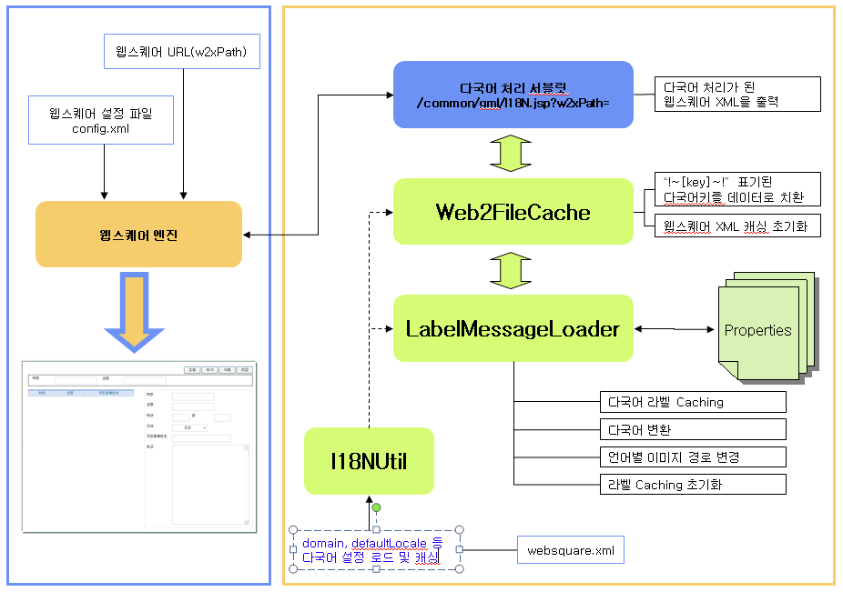
다국어로 치환될 값을 KEY=VALUE 형식의 Property로 작성합니다.
value는 unicode 값으로 입해야 합니다.
아래는 "TEST" 키 값에 매칭될 한글명 "테스트"를 property로 작성한 예입니다.
코드 0-5.propery 작성 예
TEST=\ud14c\uc2a4\ud2b8
Eclipse의 Properties Editor 플러그인 사용을 권장합니다.
properties 파일 작성 시 자동 유니코드 변환 기능이 지원됩니다.
그림 21.Properties Editor
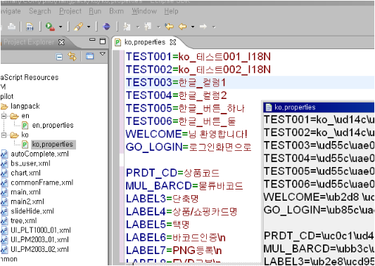
다국어 처리시 WebSquare XML 페이지를 호출할 Servlet 파일의 지정된 스크립트 Function을 지정합니다.
페이지 로딩 전 WebSquare 엔진에서 참조할 스크립트를 지정합니다.
별도 Servlet에서 다국어 분기 로직을 수행하고 하는 경우 pageURLPrefix의 value에 Context-Root를 기준으로 해당 Servlet작성합니다.
코드 0-6.설정 예 (config.xml)
<!-- w2xPath경로를 별도 Servlet으로 처리하는 경우 설정 --> <!-- pageURLPrefix value="/common/gib/jsp/I18N.jsp?w2xPath=" --> <pageURLPrefix type="function" value="getI18NUrl" /> <!-- WebSquare 엔진에서 참조할 스크립트 --> <engine> <module src="/common/gml/js/gmlCommon.js" /> </engine>
다국어 Page를 호출할 Servlet url을 return합니다.
locale 값을 지정하고자 하는 경우는 url에 파라미터를 포함하여 return합니다.
코드 0-7.function 작성 예
function getI18NUrl() { var locale = WebSquare.cookie.getCookie( "locale" ); if( locale == null || locale == '' ) { return "/websquare/engine/servlet/I18N.jsp?w2xPath="; } else { return "/websquare/engine/servlet/I18N.jsp?locale="+unescape(locale)+"&w2xPath="; } }
다국어에서 필요한 설정값들을 추가합니다.
<i18n> <!-- 다국어 리소스 번들 파일이 존재하는 폴더. 설정이 없는 경우 $WEBSQUARE_HOME/locale를 사용한다. * 한국어의 경우 baseDir/ko/ 아래 파일이 존재함 * 영어의 경우 baseDir/en/ 아래 파일이 존재함 --> <baseDir value=""/> <!-- 기본 locale를 설정한다. 설정이 없는 경우 en을 사용한다. --> <defaultLocale value="jp"> <domain name="localhost" locale="en"/> <domain name="ko.shb.co.kr" locale="ko"/> <domain name="en.shb.co.kr" locale="en"/> <domain name="jp.shb.co.kr" locale="jp"/> </defaultLocale> <!-- 변환에 사용할 다국어를 서버에 넘겨주기 위해 사용할 파라미터. 설정이 없는 경우 locale를 사용한다. 다국어 판단 우선순위 1.url 2.defaultLocale설정(domain별 default locale참조 후 전체 default locale 참조) --> <localeParam value="locale"/> <!-- baseDir : 웹스퀘어 XML파일이 존재하는 폴더를 지정한다. 설정이 없는 경우 정상 동작하지 않는다. cache : true | false 변환된 파일을 캐싱할지 설정한다. 기본값은 false이다. --> <xmlInfo baseDir="C:\TNB\webdev\webapps\ROOT" cache="false"/> </i18n>
페이지 작성시 value에 다국어로 변환할 부분을 "!~KEY~!" 형식으로 지정합니다.
locale 값을 지정하는 경우 파라미터로 전달합니다.
코드 0-8.설정
<w2:column id="column3" style="height:20px"
hidden="" inputType="text" width="161" valueType="binary"
value="!~TEST~!">
</w2:column>코드 0-9.변환 결과
<w2:column id="column3" style="height:20px"
hidden="" inputType="text" width="161" valueType="binary"
value="테스트">
</w2:column>Project별 Server Locale 설정을 통해 Preview에 서버 다국어가 적용된 화면을 Preview에서 볼 수 있는 기능을 제공합니다.
WebSquare5 Studio를 실행합니다.
해당 프로젝트를 우클릭하여 Properties를 선택합니다.
WebSquare – Server Locale을 선택합니다.
그림 22.Server Locale 선택
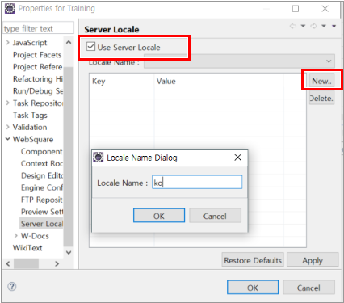
New 버튼을 클릭 하여 등록할 Locale Name을 입력하고 등록할 .properties 파일을 선택합니다. (여러 파일을 선택할 수 있습니다.)
등록한 Locale Name 및 .properties의 내용이 화면에 표시되는지 확인합니다.
여러 개의 Locale을 등록하면 Preview를 통해 적용된 화면을 볼 수 있습니다.
프로퍼티 파일이 아닌 DB를 사용할 경우 해당 파일 일부분(initializeProperty 등)을 참고하여 커스터마이징 class를 생성/등록해야 합니다.
DB를 사용하기 위해서 아래의 순서로 작업하십시오.
websquare.xml 변경. (i18N 노드)
com.inswave.common.i18n.LoadI18nMessageImpl 생성 및 등록.
DB 작업 (테이블 생성 및 데이터 등록)
i18NCommon.js 등록
config.xml 설정 추가. (i18Ncommon.js, pageURLPrefix)
참고용 예제 파일:
(1) DefaultMessageImpl.java: 웹스퀘어 원본 소스.
(2) websquare_multilang.zip: 특정 프로젝트에 적용한 커스터마이징 소스
websquare.xml 파앨에 아래 내용을 추가합니다.
코드 0-10.설정 추가 (websquare.xml)
<messageImpl value="com.inswave.common.i18n.LoadI18nMessageImpl"/>코드 0-11.설정 예 (websquare.xml)
<i18n> // 변환에사용할 다국어를서버에 넘겨주기위해사용할 파라미터. // 설정이 없는 경우 locale을 사용. // 다국어판단 우선순위 // 1.url // 2.defaultLocale 설정(domain 별default locale 참조후 전체default locale참조) <defaultLocale value="ko"> <domain name="" locale=""/> </defaultLocale> <localeParam value="locale"/> <!-- DB를 이용한 서버 다국어 설정 --> <messageInfo storageType="" baseDir=""> <messageImpl value="com.inswave.common.i18n.LoadI18nMessageImpl"/> </messageInfo> <defaultLocale value="ko"> <domain name="" locale=""/> </defaultLocale> <localeParam value="locale"/> // baseDir : 웹스퀘어 XML이 존재하는 폴더. 필수. // cache : true | false 변환된 파일 캐싱 여부. 기본값은 false. --> <xmlInfo baseDir="C:\project01\webapp\xml" cache="false"/> </i18n>
위에 등록한 LoadI18nMessageImpl.java를 프로젝트에 맞게 수정하십시오.
해당 클래스는 실제 변환될 다국어 값을 DB에서 읽어 들여 HashTable 에 올려 놓습니다.
LoadI18nMessageImpl .java 을 컴파일하여 클래스를 등록합니다.
첨부파일은 실제 프로젝트 파일과 상이합니다.
프로젝트에 적용된 클래스는 프로웍스 DB커넥션을 이용하므로 JDBC 처리가 다릅니다.
코드 0-12.DB 테이블 생성 및 데이트 등록 예
CREATE TABLE I18N_TABLE (
LANG_KEY VARCHAR(20) NOT NULL ,
WORD_KO VARCHAR(150) NULL ,
WORD_EN VARCHAR(150) NULL ,
WORD_CN VARCHAR(150) NULL ,
I18N_TABLEcol VARCHAR(45) NULL ,
PRIMARY KEY (LANG_KEY) );
insert into i18n_table(lang_key, word_ko, word_en, word_cn)
values('a1', '한글_a1', 'ENG_a1', 'CHN_a1');
insert into i18n_table(lang_key, word_ko, word_en, word_cn)
values('a2', '한글_a2', 'ENG_a2', 'CHN_a2');아래와 같이 i18Ncommon.js 및 pageURLPrefix를 설정합니다.
코드 0-13.설정 예 (config.xml)
<engine> <!-- module src="/education/common/common.js"/ --> <module src="/wqtemplate/common/js/i18nCommon.js"/> </engine> <pageURLPrefix type="function" value="getI18NUrl" />
config.xml 파일에 설정된 i18NCommon.js 를 WebSquare 디렉토리의 해당 경로에 등록하십시오.
[호출경로 : /wqtemplate/common/js/i18nCommon.js]
아래 fuction을 포함해야 합니다.
function getI18NUrl() {
var locale = WebSquare.cookie.getCookie( "locale" );
if( locale == null || locale == '' ) {
return "/websquare/engine/servlet/I18N.jsp?w2xPath=";
} else{
return "/websquare/engine/servlet/I18N.jsp?locale="+unescape(locale)+"&w2xPath=";}
}페이지 작성시 value에 다국어로 변환할 부분을 "!~KEY~!" 형식으로 지정합니다.
코드 0-14.설정
<w2:column id="column3" style="height:20px"
hidden="" inputType="text" width="161" valueType="binary"
value="!~TEST~!">
</w2:column>아래와 같이 KEY에 해당하는 locale 값으로 변환됩니다.
코드 0-15.변환 결과
<w2:column id="column3" style="height:20px"
hidden="" inputType="text" width="161" valueType="binary"
value="테스트">
</w2:column>locale 우선 순위는 아래와 같습니다.
1순위 쿠키
2순위 도메인 설정 (websquare.xml)
3순위 request parameter (locale) 값
키값에 해당하는 locale 값이 없으면 공백 처리됩니다.
트리거 클릭 이벤트 시 아래와 같이 쿠키에 locale을 설정하십시오. 이후 처리되는 XML 페이지는 쿠키에 셋팅된 locale에 따라 변환됩니다.
코드 0-16.locale 설정 예
WebSquare.cookie.setCookie("ko");